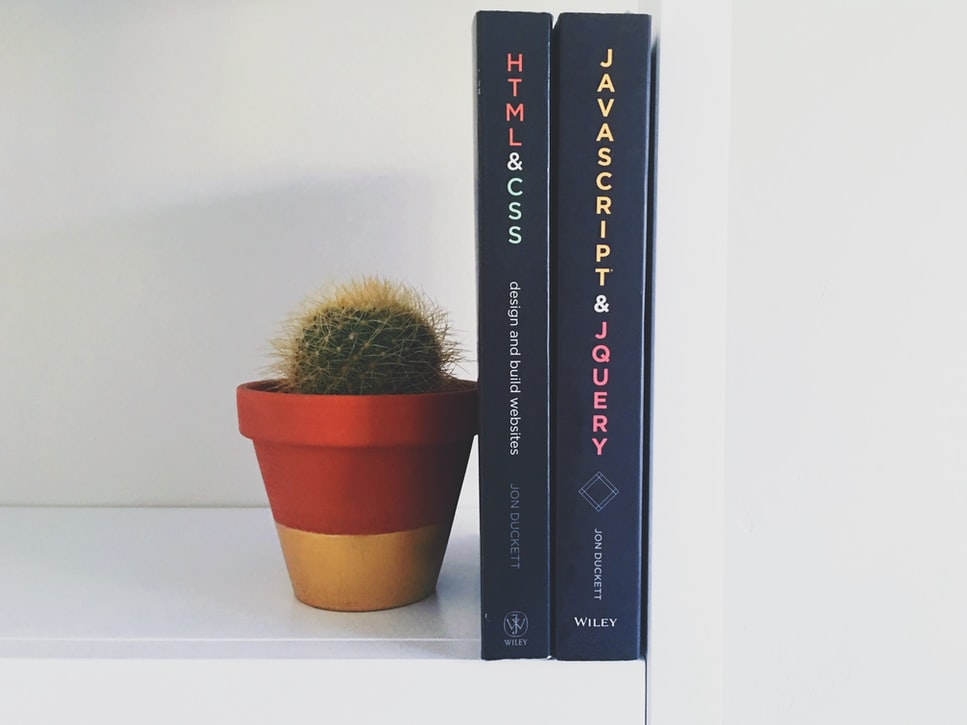

Cascading Style Sheets is a style sheet language used to describe the presentation display of a document written in a markup language, like HTML. Its most common application is to style web pages written in HTML and XHTML, but CSS can also be applied to any kind of XML document.
The principle design of CSS is to enable the separation of document content from its presentation, including elements such as the layout, colors, and fonts, all in a different file separated from the main content file.
